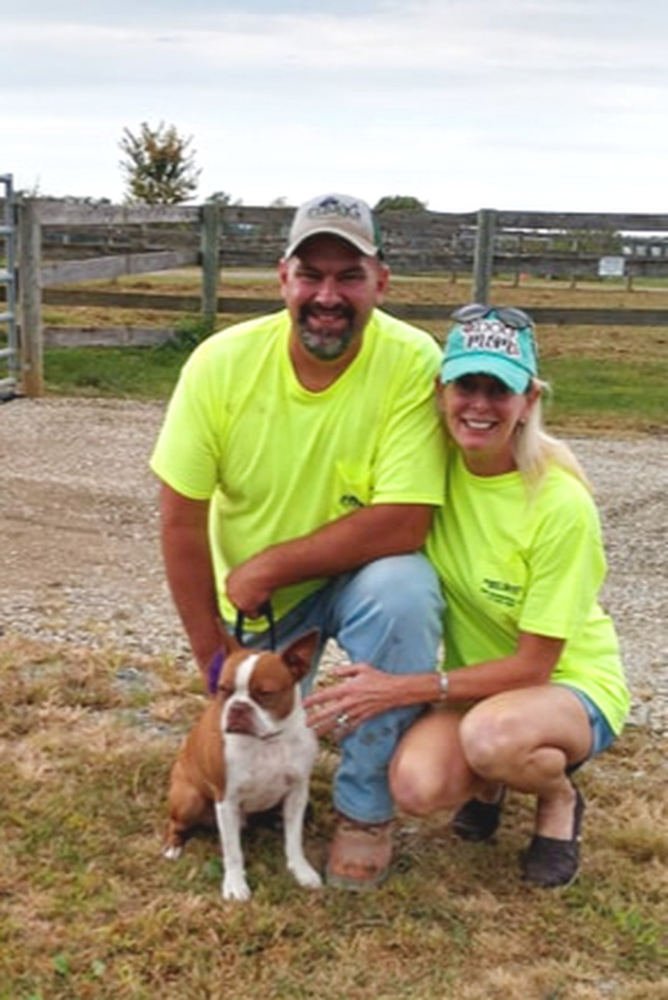
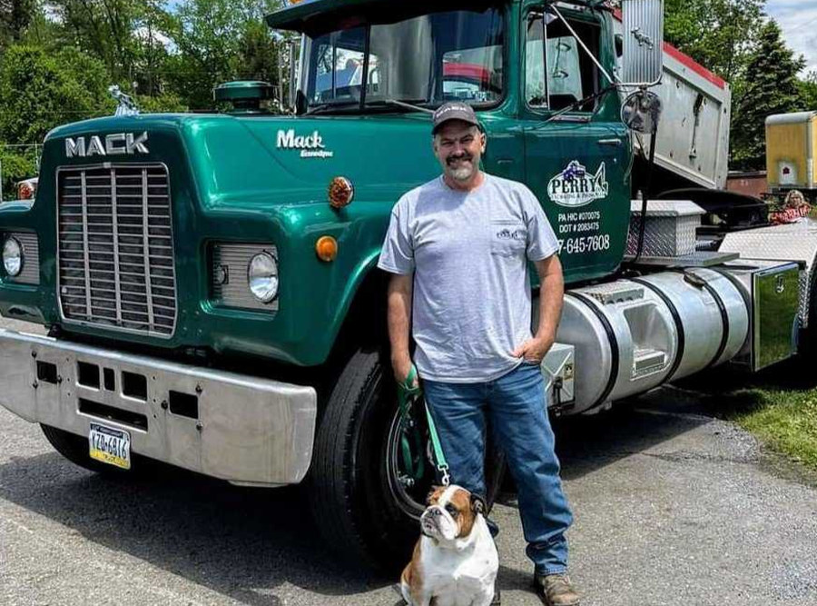

Site work, driveways, septic and hauling. Every one of these is a job we posted the week we finished it.
Tara-Dawn owns it. Harv runs the iron.
In 2010 the excavating company everyone here used closed its doors, and Perry County was left with nowhere to call. Tara-Dawn Hazen put her own savings into a used triaxle and started this, and became the first woman to own an excavating business in the community.
Her then-boyfriend, now her husband, had spent his working life in excavation, and Harv is still the one on the machine — the reason our customers keep writing his name into their reviews. By 2024 we had come through the certifications as well: a woman-owned business, and a disadvantaged business enterprise cleared to work on state and federal jobs.
16 years Tara-Dawn has run Perry Co. Excavating


Fifteen people have recommended us on Facebook. Here are five of them.
I had two areas leveled with gravel placed for shed and carport sites and new gravel spread on my driveway. The whole job cost far less than I had anticipated, but more importantly the work was done quickly and masterfully.
They've helped us with numerous jobs. Most recently helping remove big trees that came down, a septic system that was too flooded to drain, a driveway washed out and my property a mess. By the time they left it all looked perfect.
We had been looking to have our driveway re-stoned and we went no further than Perry County Excavating. Both Tara and Harve were so nice to work with. Their prices were very reasonable.
Harv was an expert! He worked quickly and above and beyond. Great communication back and forth with my concerns.
We have used them to do our driveway, grade some of our property, and do a building pad. Great communication. Excellent work.
Yes. We put in septic systems and sand mounds, and we dig the trenches for sewer, water and utility lines. We hold a Pennsylvania DEP sewage transport permit, WTSP #WH151950.
We are based at New Bloomfield, so Perry County and Juniata County are our back yard and we are in Cumberland and Dauphin most weeks. Our certifications carry us further out again — as far as Snyder, Northumberland, Lebanon, Lancaster, Franklin, Adams and York.
Yes. We build stone driveways and building pads, and we carry every size of stone and topsoil on our own trucks. We also pave and seal, for houses and for businesses.
Yes. We clear ground, strip and grub it, and we put in drainage, ponds and stormwater work. In August we cleared the property and expanded the parking area for Rock Proof Boats in Marysville.
Yes. We are Pennsylvania home improvement contractor #070075, PUC #A-8912443 and DOT #2083475. Perry Co. Excavating is also certified as a woman-owned small business (WBE, WOSB and EDWOSB) and as a disadvantaged business enterprise through the Pennsylvania Unified Certification Program, which lets us take state and federal work.
Tell Tara-Dawn what the job is. Photographs help more than anything.